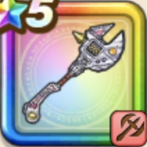

スラリン・ギア
攻略班 7.5点 / かぶとわり緊急メンテナンスフリーズストライクスラキャノン・フルバーストリアクティブガード
くわしい特徴
【レベル別習得スキル】 Lv1【ゴドハン】攻撃力+5 Lv10かぶとわり（消費MP：8）敵1体に威力150%の斬撃ダメージを与え、たまに守備力を1段階下げる Lv15緊急メンテナンス（消費MP：最大MPの15%）悪い状態変化とすべての状態異常を防ぎ、敵からの攻撃でHP20%以下になったときに1回だけHPを全快する効果を付与(戦闘中1回のみ使用可能) Lv20フリーズストライク（消費MP：30）敵全体に威力260%のヒャド属性体技ダメージを与え、まれにこうげき呪文の威力を下げる Lv30スラキャノン・フルバースト（消費MP：43）敵1体に威力620%のギラ属性体技ダメージを与える(まれに直撃する) Lv35スライム系へのダメージ+5% Lv40ゾンビ系へのダメージ+5% Lv45攻撃力+12 Lv50リアクティブガード（消費MP：14）戦闘開始時に仲間のダメージを引き受ける職業固有特性の発動率を上げ、引き受けたダメージの1000%を相手にも与える(効果4ターン) 【限界突破スキル】 1凸スキルの斬撃・体技ダメージ+7% 2凸スキルの斬撃・体技ダメージ+7% 3凸スキルの斬撃・体技ダメージ+7% 4凸スキルの斬撃・体技ダメージ+7%